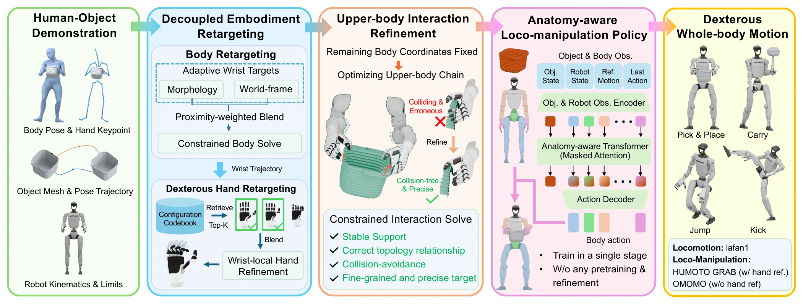

Learning Dexterous Humanoid Loco-Manipulation
from Human Demonstrations
Under Review

Abstract
Learning dexterous humanoid loco-manipulation from human demonstrations requires preserving demonstrated interactions across embodiment differences and realizing them under robot dynamics. Independent body and hand retargeting can disrupt coordination between wrist placement and finger articulation, while accurate kinematic references alone do not guarantee physically consistent hand–object interaction. We present DexWeave, a unified framework that bridges interaction-consistent motion retargeting and whole-body policy learning for dexterous humanoid loco-manipulation. A two-stage retargeting pipeline first initializes whole-body motions with specialized body and hand solvers, then jointly refines the upper-body interaction chain while preserving lower-body support. Based on these references, an anatomy-aware Transformer policy organizes whole-body control through regional tokens and masked attention, and incorporates object information for dexterous manipulation. This unified controller is trained with reinforcement learning without relying on pretrained trackers or subsequent residual refinement. Experiments across locomotion and loco-manipulation datasets demonstrate improved retargeting quality and interaction consistency, while policy evaluations demonstrate faster convergence and higher manipulation accuracy. Furthermore, we deploy the policy on a real Unitree G1 robot with dexterous Inspire hands.
Method overview

DexWeave first retargets body and hand motions with specialized solvers, then jointly refines the arms, wrists, and fingers while preserving the supporting body motion. An anatomy-aware Transformer uses regional tokens and masked attention to coordinate whole-body control, with object information guiding upper-body interaction. The policy is trained in a single PPO stage to control the 41 actuated joints of a Unitree G1 with Inspire hands.
Retargeting results
Retargeting 1
Retargeting 2
Retargeting 3
| Dataset | Method | Penetration | Foot skating | Contact preservation | |||
|---|---|---|---|---|---|---|---|
| Duration ↓ | Max depth (cm) ↓ | Duration ↓ | Max velocity (m/s) ↓ | Duration ↑ | Distance (cm) ↓ | ||
| LAFAN1 | OmniRetarget | 0.125 | 2.934 | 0.091 | 0.416 | N/A | N/A |
| GMR | 0.183 | 4.314 | 0.010 | 0.548 | N/A | N/A | |
| SOMA | 0.968 | 6.379 | 0.115 | 0.565 | N/A | N/A | |
| DexWeave (Ours) | ≈0 | 2.575 | 0 | 0 | N/A | N/A | |
| OMOMO | OmniRetarget | 0.131 | 2.735 | ≈0 | 1.455 | 0.644 | 10.289 |
| GMR | 0.916 | 3.117 | 0.008 | 0.802 | 0.879 | 7.677 | |
| SOMA | 0.746 | 4.163 | 0.034 | 0.467 | 0.577 | 16.205 | |
| DexWeave (Ours) | 0.002 | 2.117 | ≈0 | 0.355 | 0.999 | 2.944 | |
Bold marks the best value and underlining the second-best within each dataset. Durations are frame fractions; ≈0 denotes a near-zero value.
| Dataset | Method | Penetration | Hand alignment | |||
|---|---|---|---|---|---|---|
| Duration ↓ | Max depth (cm) ↓ | Primary error (mm) ↓ | Secondary error (mm) ↓ | Palm error (°) ↓ | ||
| GRAB | OmniRetarget + DexPilot | 0.183 | 2.123 | 209.353 | 207.745 | 52.122 |
| OmniRetarget + DexPilot + IK | 0.212 | 2.269 | 16.585 | 13.368 | 11.555 | |
| OmniRetarget + SBR | 0.184 | 2.120 | 210.524 | 212.985 | 52.122 | |
| OmniRetarget + SBR + IK | 0.190 | 2.362 | 14.925 | 14.659 | 9.530 | |
| DexWeave — refined (Ours) | 0.001 | 1.263 | 4.342 | 14.476 | 3.652 | |
| HUMOTO | OmniRetarget + DexPilot | 0.370 | 3.638 | 292.886 | 278.574 | 47.815 |
| OmniRetarget + DexPilot + IK | 0.522 | 3.597 | 32.389 | 31.018 | 14.444 | |
| OmniRetarget + SBR | 0.370 | 3.638 | 292.750 | 283.381 | 47.815 | |
| OmniRetarget + SBR + IK | 0.511 | 3.582 | 29.999 | 28.436 | 12.476 | |
| DexWeave — refined (Ours) | 0.007 | 2.854 | 7.198 | 11.702 | 4.439 | |
Bold marks the best value and underlining the second-best within each dataset. Primary: thumb and index fingertips. Secondary: remaining fingertips. Palm: palm-normal angular error.
Simulation results
Simulation 1
Simulation 2
Simulation 3
| Actor | Episode length (%) ↑ | Body position (cm) ↓ | Anchor position (cm) ↓ | Anchor rotation (deg) ↓ |
|---|---|---|---|---|
| BeyondMimic | 96.542 | 4.551 | 11.660 | 6.010 |
| AdaMimic | — | — | — | — |
| Any2Track | 13.258 | 10.167 | 89.767 | 26.604 |
| GMT | 80.789 | 2.767 | 32.933 | 11.440 |
| DexWeave (Ours) | 97.269 | 4.314 | 10.801 | 5.588 |
Any2Track and GMT use full-motion completion rather than the 500-step training horizon. — denotes results not reported in the manuscript.
| Actor | Success rate (%) ↑ | Body position (cm) ↓ | Object position (cm) ↓ | Object rotation (deg) ↓ |
|---|---|---|---|---|
| WristMimic | 25.72 | 9.61 | 7.78 | 18.70 |
| Object MLP | 81.67 | 5.75 | 8.93 | 18.18 |
| DexWeave (Ours) | 87.60 | 5.09 | 7.19 | 17.72 |
Real robot results
Real robot 1
Real robot 2
Real robot 3
Ablation study
| Dataset | Stage | Penetration | Hand alignment | |||
|---|---|---|---|---|---|---|
| Duration ↓ | Max depth (cm) ↓ | Primary error (mm) ↓ | Secondary error (mm) ↓ | Palm error (deg) ↓ | ||
| GRAB | Decoupled | 0.157 | 1.778 | 36.033 | 36.995 | 0.189 |
| Refined | 0.001 | 1.263 | 4.342 | 14.476 | 3.652 | |
| HUMOTO | Decoupled | 0.204 | 2.568 | 32.703 | 26.090 | 0.159 |
| Refined | 0.007 | 2.854 | 7.198 | 11.702 | 4.439 | |
Decoupled is the body-and-hand initialization; refined is the final output. Lower values are better.
| Attention setting | Episode length (steps) ↑ | Body position (cm) ↓ | Object position (cm) ↓ | Object rotation (deg) ↓ |
|---|---|---|---|---|
| MR and MO (DexWeave) | 418.615 | 4.699 | 6.776 | 18.186 |
| Dense MR | 404.386 | 5.389 | 8.036 | 22.116 |
| Bidirectional MO | 402.183 | 4.795 | 7.545 | 20.561 |
Unsmoothed samples over iterations 14,000–14,999, averaged equally over references 215 and 403 (seed 42).